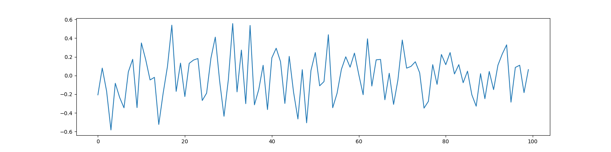
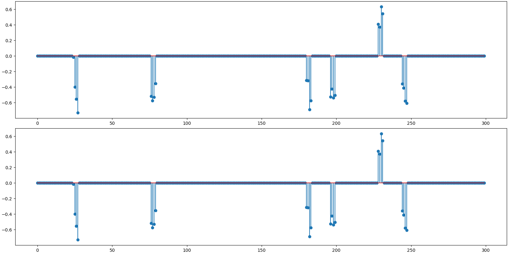
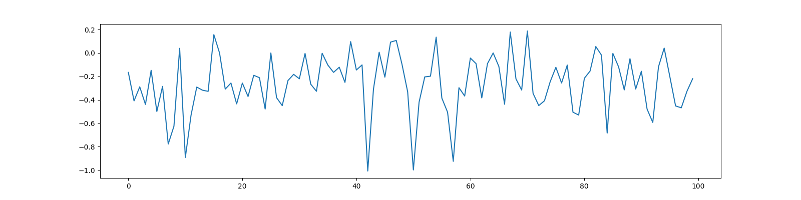
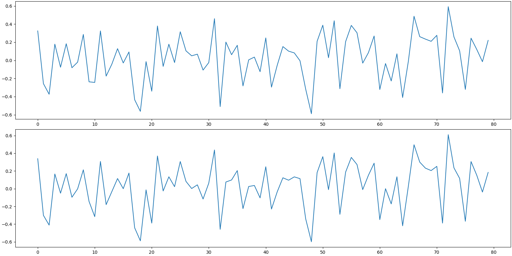
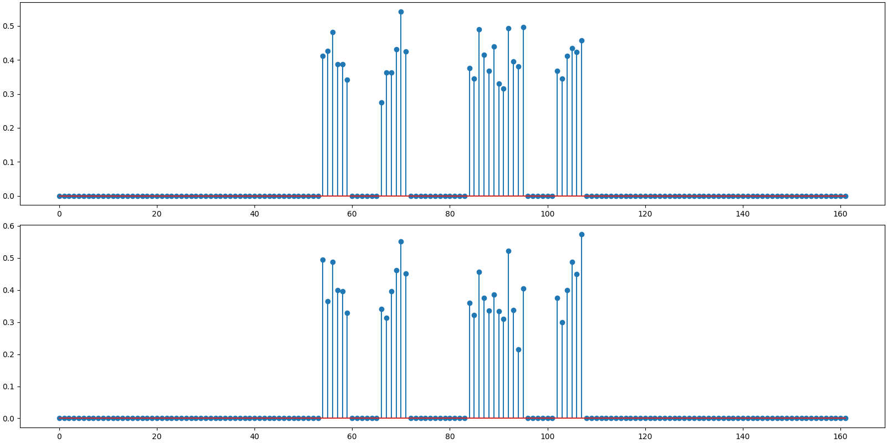
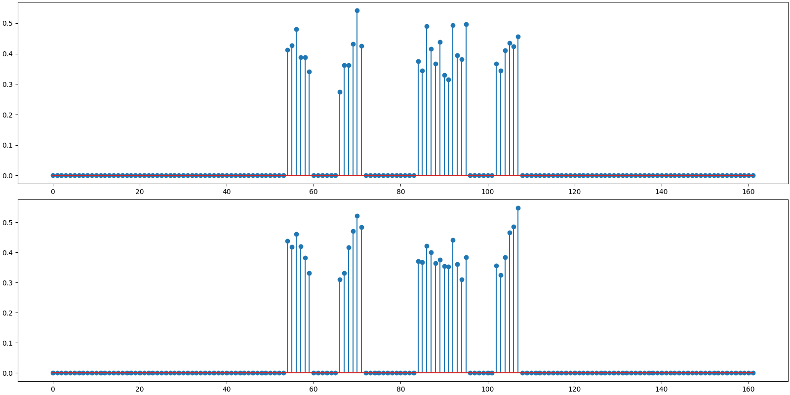
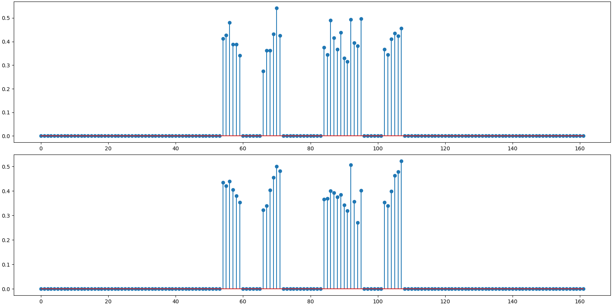

Note
Click here to download the full example code
Block Sparse Bayesian Learning¶
In this example, we demonstrate the BSBL (Block Sparse Bayesian Learning) algorithm [ZR12, ZR13] for reconstruction of block sparse signals with intra block correlations from their compressive measurements. In particular, we show
Creation of block sparse signals with intra-block correlation
Compressive sampling of the signal with Gaussian and sparse binary sensing matrices.
Reconstruction using BSBL EM algorithm (Expectation Maximization).
Reconstruction using BSBL BO algorithm (Bound Optimization).
Reconstruction in the presence of high measurement noise
Our implementation of BSBL is fully JIT compilable. To achieve this, we limit ourselves of equal sized blocks where the block size is user defined. This is not a problem in practice. As shown in [ZJMR12], the reconstruction from compressive measurements of real life signals is not affected much by the block size.
The basic compressive sensing model is given by
where \(\by\) is a known measurement vector, \(\Phi\) is a known sensing matrix and \(\bx\) is a sparse signal to be recovered from the measurements.
We introduce the block/group structure on \(\bx\) as
where each \(\bx_i\) is a block of \(b\) values. The signal \(\bx\) consists of \(g\) such blocks/groups. We only consider the case of equal sized blocks in our implementation. Under the block sparsity model, only a few \(k \ll g\) blocks are nonzero (active) in the signal \(\bx\) however, the locations of these blocks are unknown.
We can rewrite the sensing equation as:
by splitting the sensing matrix into blocks of columns appropriately.
Under the sparse Bayesian framework, each block is assumed to satisfy a parametrized multivariate Gaussian distribution:
The covariance matrix \(\bB_i\) captures the intra block correlations.
We further assume that the blocks are mutually uncorrelated. The prior of \(\bx\) can then be written as
where
We also model the correlation among the values within each active block as an AR-1 process. Under this assumption the matrices \(\bB_i\) take the form of a Toeplitz matrix
where \(r\) is the AR-1 model coefficient. This constraint significantly reduces the model parameters to be learned.
Measurement noise is modeled as independent zero mean Gaussian noise \(\PP(\be; \lambda) \sim \NNN(\bzero, \lambda \bI)\). BSBL doesn’t require you to provide the value of noise variance as input. It is able to estimate \(\lambda\) within a algorithm.
The estimate of \(\bx\) under Bayesian learning framework is given by the posterior mean of \(\bx\) given the measurements \(\by\).
Please also refer to the BSBL website by the authors of the original algorithm for further information.
Related Examples
Setup¶
# Configure JAX for 64-bit computing
from jax.config import config
config.update("jax_enable_x64", True)
Let’s import necessary libraries
from matplotlib import pyplot as plt
# jax imports
import jax.numpy as jnp
from jax import random, jit
# cr-suite imports
import cr.nimble as crn
import cr.nimble.dsp as crdsp
import cr.sparse as crs
import cr.sparse.dict as crdict
import cr.sparse.data as crdata
import cr.sparse.plots as crplot
import cr.sparse.block.bsbl as bsbl
Problem Configuration¶
Block Sparse Signal¶
Out:
<StemContainer object of 3 artists>
Gaussian Sensing¶
Sensing matrix
Out:
<matplotlib.image.AxesImage object at 0x000001FAE2FA0370>
Measurements
Reconstruction using BSBL EM¶
We need to provide the sensing matrix, measurements and the block size as parameters to the reconstruction algorithm
options = bsbl.bsbl_em_options(y, learn_lambda=0)
sol = bsbl.bsbl_em_jit(Phi, y, b, options)
print(sol)
Out:
iterations=24
block size=4
blocks=75, nonzero=6
r_norm=2.28e-10
x_norm=2.45e+00
lambda=1.00e-12
dmu=1.33e-10
Reconstructed signal
x_hat = sol.x
print(f'BSBL-EM: PRD: {crn.prd(x, x_hat):.1f} %, SNR: {crn.signal_noise_ratio(x, x_hat):.2f} dB.' )
Out:
BSBL-EM: PRD: 0.0 %, SNR: 198.62 dB.
Plot the original and reconstructed signal

Out:
<StemContainer object of 3 artists>
Reconstruction using BSBL BO¶
We need to provide the sensing matrix, measurements and the block size as parameters to the reconstruction algorithm
options = bsbl.bsbl_bo_options(y, learn_lambda=0)
sol = bsbl.bsbl_bo_jit(Phi, y, b, options)
print(sol)
Out:
iterations=6
block size=4
blocks=75, nonzero=6
r_norm=2.06e-10
x_norm=2.45e+00
lambda=1.00e-12
dmu=1.14e-10
Reconstructed signal
x_hat = sol.x
print(f'BSBL-BO: PRD: {crn.prd(x, x_hat):.1f} %, SNR: {crn.signal_noise_ratio(x, x_hat):.2f} dB.' )
Out:
BSBL-BO: PRD: 0.0 %, SNR: 199.47 dB.
Plot the original and reconstructed signal
Out:
<StemContainer object of 3 artists>
Observations:
We specified
learn_lambda=0since we knew that this is a noiseless problem.Note the nonzero blocks count. They have been identified correctly.
Recovery is perfect for both algorithms. In other words, both the nonzero coefficient values and locations have been correctly estimated and identified respectively.
BSBL-BO is faster compared to BSBL-EM. See how it finished in far less number of iterations. This is on expected lines as BSBL-BO accelerates the convergence using bound optimization a.k.a. majorization-minimization.
Sparse Binary Sensing¶
We shall have just 12 ones in each column of the sensing matrix
d = 12
Build the sensing matrix
Out:
<matplotlib.image.AxesImage object at 0x000001FAE2F24790>
Measurements
Reconstruction using BSBL EM¶
options = bsbl.bsbl_em_options(y, learn_lambda=0)
sol = bsbl.bsbl_em_jit(Phi, y, b, options)
print(sol)
Out:
iterations=24
block size=4
blocks=75, nonzero=6
r_norm=2.12e-10
x_norm=2.45e+00
lambda=1.00e-12
dmu=1.15e-10
Reconstructed signal
x_hat = sol.x
print(f'BSBL-EM: PRD: {crn.prd(x, x_hat):.1f} %, SNR: {crn.signal_noise_ratio(x, x_hat):.2f} dB.' )
Out:
BSBL-EM: PRD: 0.0 %, SNR: 199.70 dB.
Plot the original and reconstructed signal

Out:
<StemContainer object of 3 artists>
Reconstruction using BSBL BO¶
options = bsbl.bsbl_bo_options(y, learn_lambda=0)
sol = bsbl.bsbl_bo_jit(Phi, y, b, options)
print(sol)
Out:
iterations=6
block size=4
blocks=75, nonzero=6
r_norm=1.89e-10
x_norm=2.45e+00
lambda=1.00e-12
dmu=9.35e-11
Reconstructed signal
x_hat = sol.x
print(f'BSBL-BO: PRD: {crn.prd(x, x_hat):.1f} %, SNR: {crn.signal_noise_ratio(x, x_hat):.2f} dB.' )
Out:
BSBL-BO: PRD: 0.0 %, SNR: 200.74 dB.
Plot the original and reconstructed signal
Out:
<StemContainer object of 3 artists>
Observations:
Recovery is perfect for both algorithms.
BSBL-BO is much faster.
Both algorithms are converging in same number of iterations as Gaussian sensing matrices.
Noisy Measurements¶
We now consider an example where compressive measurements are corrupted with significant amount of noise.
generate block sparse signal with high intra block correlation
Out:
<StemContainer object of 3 artists>
Sensing matrix
Noiseless measurements
y0 = Phi @ x
Noise at an SNR of 15 dB
noise = crdsp.awgn_at_snr_std(crn.KEYS[3], y0, snr)
Addition of noise to measurements
y = y0 + noise
print(f'measurement SNR: {crn.signal_noise_ratio(y0, y):.2f} dB')
Out:
measurement SNR: 15.96 dB
Plot the noiseless and noisy measurements
Out:
[<matplotlib.lines.Line2D object at 0x000001FAE2DEF070>]
Reconstruction Benchmark¶
An oracle reconstruction is possible if one knows the nonzero indices of x. One can then compute a least square solution over these indices. The reconstruction SNR of this solution gives us a good benchmark against which we can evaluate the quality of reconstruction by any other algorithm.
# Find the least square solution
x_ls_coeffs = jnp.linalg.pinv(Phi[:, indices]) @ y
x_ls = crdsp.build_signal_from_indices_and_values(n, indices, x_ls_coeffs)
print(f'Benchmark rec: PRD: {crn.prd(x, x_ls):.1f} %, SNR: {crn.signal_noise_ratio(x, x_ls):.2f} dB')
Out:
Benchmark rec: PRD: 13.3 %, SNR: 17.55 dB
Plot the oracle reconstruction
Out:
<StemContainer object of 3 artists>
Reconstruction using BSBL EM¶
options = bsbl.bsbl_em_options(y)
sol = bsbl.bsbl_em_jit(Phi, y, b, options)
print(sol)
Out:
iterations=62
block size=6
blocks=27, nonzero=5
r_norm=3.05e-01
x_norm=2.23e+00
lambda=1.68e-03
dmu=7.40e-09
Reconstructed signal
x_hat = sol.x
print(f'BSBL-EM: PRD: {crn.prd(x, x_hat):.1f} %, SNR: {crn.signal_noise_ratio(x, x_hat):.2f} dB.' )
Out:
BSBL-EM: PRD: 11.0 %, SNR: 19.16 dB.
Plot the original and reconstructed signal
Out:
<StemContainer object of 3 artists>
Reconstruction using BSBL BO¶
options = bsbl.bsbl_bo_options(y)
sol = bsbl.bsbl_bo_jit(Phi, y, b, options)
print(sol)
Out:
iterations=56
block size=6
blocks=27, nonzero=5
r_norm=3.00e-01
x_norm=2.21e+00
lambda=1.56e-03
dmu=9.77e-09
Reconstructed signal
x_hat = sol.x
print(f'BSBL-BO: PRD: {crn.prd(x, x_hat):.1f} %, SNR: {crn.signal_noise_ratio(x, x_hat):.2f} dB.' )
Out:
BSBL-BO: PRD: 10.6 %, SNR: 19.45 dB.
Plot the original and reconstructed signal
Out:
<StemContainer object of 3 artists>
Observations:
Benchmark SNR is slightly better than measurement SNR. This is due to the fact that we are using our knowledge of support for x.
Both BSBL-EM and BSBL-BO are able to detect the correct support of x.
SNR for both BSBL-EM and BSBL-BO is better than the benchmark SNR. This is due to the fact that BSBL is exploiting the intra-block correlation modeled as an AR-1 process.
The ordinary least squares solution is not attempting to exploit the intra block correlation structure at all.
In this example BSBL-BO is somewhat faster than BSBL-EM but not by much.
Total running time of the script: ( 0 minutes 20.787 seconds)